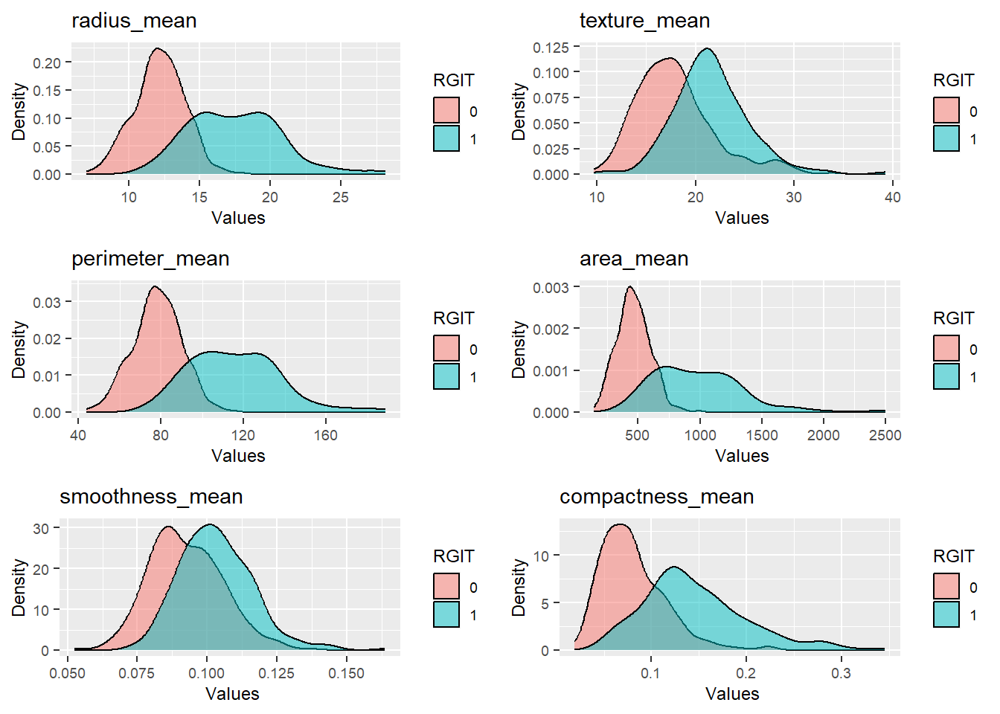
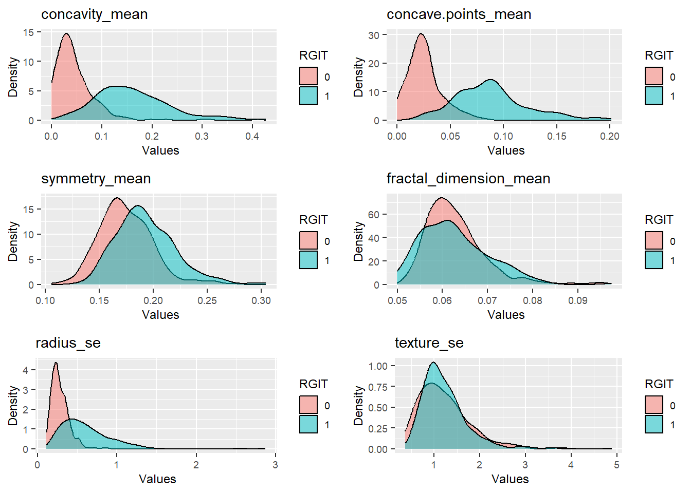
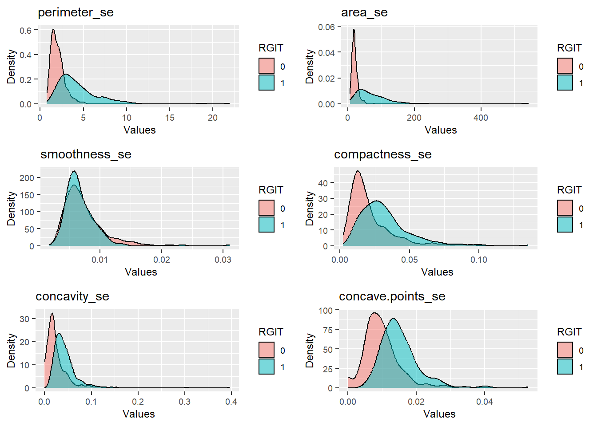
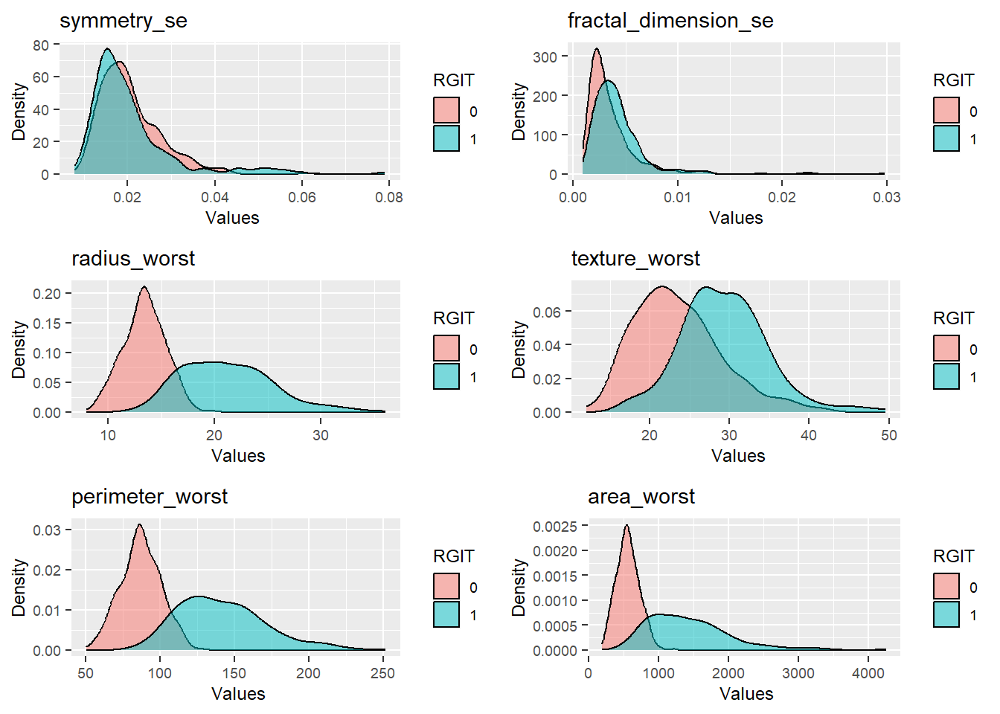

Introduction
The goal of this project is to analyze spatial data summarizing the
number of acidents in New york. The objective is to create a heat map
where every zip code shows the number of car accidents.
The information base of this analysis comes from a dataset found in
Kaggle that provides differents
Data
data<-read.csv("C:/Users/dsaav/Documents/Projects/Datasets/Breast Cancer Prediction/data.csv",
header = TRUE)
print(sum(is.na(data$ZI)))
[1] 0
for (i in 1:ncol(data)){
print(paste(colnames(data)[i],"=", sum(is.na(data[,i]))))
}
[1] "diagnosis = 0"
[1] "radius_mean = 0"
[1] "texture_mean = 0"
[1] "perimeter_mean = 0"
[1] "area_mean = 0"
[1] "smoothness_mean = 0"
[1] "compactness_mean = 0"
[1] "concavity_mean = 0"
[1] "concave.points_mean = 0"
[1] "symmetry_mean = 0"
[1] "fractal_dimension_mean = 0"
[1] "radius_se = 0"
[1] "texture_se = 0"
[1] "perimeter_se = 0"
[1] "area_se = 0"
[1] "smoothness_se = 0"
[1] "compactness_se = 0"
[1] "concavity_se = 0"
[1] "concave.points_se = 0"
[1] "symmetry_se = 0"
[1] "fractal_dimension_se = 0"
[1] "radius_worst = 0"
[1] "texture_worst = 0"
[1] "perimeter_worst = 0"
[1] "area_worst = 0"
[1] "smoothness_worst = 0"
[1] "compactness_worst = 0"
[1] "concavity_worst = 0"
[1] "concave.points_worst = 0"
[1] "symmetry_worst = 0"
[1] "fractal_dimension_worst = 0"
diagnosis radius_mean texture_mean perimeter_mean area_mean smoothness_mean compactness_mean concavity_mean
1 1 17.99 10.38 122.80 1001.0 0.11840 0.27760 0.3001
2 1 20.57 17.77 132.90 1326.0 0.08474 0.07864 0.0869
3 1 19.69 21.25 130.00 1203.0 0.10960 0.15990 0.1974
4 1 11.42 20.38 77.58 386.1 0.14250 0.28390 0.2414
5 1 20.29 14.34 135.10 1297.0 0.10030 0.13280 0.1980
6 1 12.45 15.70 82.57 477.1 0.12780 0.17000 0.1578
concave.points_mean symmetry_mean fractal_dimension_mean radius_se texture_se perimeter_se area_se
1 0.14710 0.2419 0.07871 1.0950 0.9053 8.589 153.40
2 0.07017 0.1812 0.05667 0.5435 0.7339 3.398 74.08
3 0.12790 0.2069 0.05999 0.7456 0.7869 4.585 94.03
4 0.10520 0.2597 0.09744 0.4956 1.1560 3.445 27.23
5 0.10430 0.1809 0.05883 0.7572 0.7813 5.438 94.44
6 0.08089 0.2087 0.07613 0.3345 0.8902 2.217 27.19
smoothness_se compactness_se concavity_se concave.points_se symmetry_se fractal_dimension_se radius_worst
1 0.006399 0.04904 0.05373 0.01587 0.03003 0.006193 25.38
2 0.005225 0.01308 0.01860 0.01340 0.01389 0.003532 24.99
3 0.006150 0.04006 0.03832 0.02058 0.02250 0.004571 23.57
4 0.009110 0.07458 0.05661 0.01867 0.05963 0.009208 14.91
5 0.011490 0.02461 0.05688 0.01885 0.01756 0.005115 22.54
6 0.007510 0.03345 0.03672 0.01137 0.02165 0.005082 15.47
texture_worst perimeter_worst area_worst smoothness_worst compactness_worst concavity_worst
1 17.33 184.60 2019.0 0.1622 0.6656 0.7119
2 23.41 158.80 1956.0 0.1238 0.1866 0.2416
3 25.53 152.50 1709.0 0.1444 0.4245 0.4504
4 26.50 98.87 567.7 0.2098 0.8663 0.6869
5 16.67 152.20 1575.0 0.1374 0.2050 0.4000
6 23.75 103.40 741.6 0.1791 0.5249 0.5355
concave.points_worst symmetry_worst fractal_dimension_worst
1 0.2654 0.4601 0.11890
2 0.1860 0.2750 0.08902
3 0.2430 0.3613 0.08758
4 0.2575 0.6638 0.17300
5 0.1625 0.2364 0.07678
6 0.1741 0.3985 0.12440
Main Statistics
diagnosis radius_mean texture_mean perimeter_mean area_mean smoothness_mean
Min. :0.0000 Min. : 6.981 Min. : 9.71 Min. : 43.79 Min. : 143.5 Min. :0.05263
1st Qu.:0.0000 1st Qu.:11.700 1st Qu.:16.17 1st Qu.: 75.17 1st Qu.: 420.3 1st Qu.:0.08637
Median :0.0000 Median :13.370 Median :18.84 Median : 86.24 Median : 551.1 Median :0.09587
Mean :0.3726 Mean :14.127 Mean :19.29 Mean : 91.97 Mean : 654.9 Mean :0.09636
3rd Qu.:1.0000 3rd Qu.:15.780 3rd Qu.:21.80 3rd Qu.:104.10 3rd Qu.: 782.7 3rd Qu.:0.10530
Max. :1.0000 Max. :28.110 Max. :39.28 Max. :188.50 Max. :2501.0 Max. :0.16340
compactness_mean concavity_mean concave.points_mean symmetry_mean fractal_dimension_mean
Min. :0.01938 Min. :0.00000 Min. :0.00000 Min. :0.1060 Min. :0.04996
1st Qu.:0.06492 1st Qu.:0.02956 1st Qu.:0.02031 1st Qu.:0.1619 1st Qu.:0.05770
Median :0.09263 Median :0.06154 Median :0.03350 Median :0.1792 Median :0.06154
Mean :0.10434 Mean :0.08880 Mean :0.04892 Mean :0.1812 Mean :0.06280
3rd Qu.:0.13040 3rd Qu.:0.13070 3rd Qu.:0.07400 3rd Qu.:0.1957 3rd Qu.:0.06612
Max. :0.34540 Max. :0.42680 Max. :0.20120 Max. :0.3040 Max. :0.09744
radius_se texture_se perimeter_se area_se smoothness_se compactness_se
Min. :0.1115 Min. :0.3602 Min. : 0.757 Min. : 6.802 Min. :0.001713 Min. :0.002252
1st Qu.:0.2324 1st Qu.:0.8339 1st Qu.: 1.606 1st Qu.: 17.850 1st Qu.:0.005169 1st Qu.:0.013080
Median :0.3242 Median :1.1080 Median : 2.287 Median : 24.530 Median :0.006380 Median :0.020450
Mean :0.4052 Mean :1.2169 Mean : 2.866 Mean : 40.337 Mean :0.007041 Mean :0.025478
3rd Qu.:0.4789 3rd Qu.:1.4740 3rd Qu.: 3.357 3rd Qu.: 45.190 3rd Qu.:0.008146 3rd Qu.:0.032450
Max. :2.8730 Max. :4.8850 Max. :21.980 Max. :542.200 Max. :0.031130 Max. :0.135400
concavity_se concave.points_se symmetry_se fractal_dimension_se radius_worst texture_worst
Min. :0.00000 Min. :0.000000 Min. :0.007882 Min. :0.0008948 Min. : 7.93 Min. :12.02
1st Qu.:0.01509 1st Qu.:0.007638 1st Qu.:0.015160 1st Qu.:0.0022480 1st Qu.:13.01 1st Qu.:21.08
Median :0.02589 Median :0.010930 Median :0.018730 Median :0.0031870 Median :14.97 Median :25.41
Mean :0.03189 Mean :0.011796 Mean :0.020542 Mean :0.0037949 Mean :16.27 Mean :25.68
3rd Qu.:0.04205 3rd Qu.:0.014710 3rd Qu.:0.023480 3rd Qu.:0.0045580 3rd Qu.:18.79 3rd Qu.:29.72
Max. :0.39600 Max. :0.052790 Max. :0.078950 Max. :0.0298400 Max. :36.04 Max. :49.54
perimeter_worst area_worst smoothness_worst compactness_worst concavity_worst concave.points_worst
Min. : 50.41 Min. : 185.2 Min. :0.07117 Min. :0.02729 Min. :0.0000 Min. :0.00000
1st Qu.: 84.11 1st Qu.: 515.3 1st Qu.:0.11660 1st Qu.:0.14720 1st Qu.:0.1145 1st Qu.:0.06493
Median : 97.66 Median : 686.5 Median :0.13130 Median :0.21190 Median :0.2267 Median :0.09993
Mean :107.26 Mean : 880.6 Mean :0.13237 Mean :0.25427 Mean :0.2722 Mean :0.11461
3rd Qu.:125.40 3rd Qu.:1084.0 3rd Qu.:0.14600 3rd Qu.:0.33910 3rd Qu.:0.3829 3rd Qu.:0.16140
Max. :251.20 Max. :4254.0 Max. :0.22260 Max. :1.05800 Max. :1.2520 Max. :0.29100
symmetry_worst fractal_dimension_worst
Min. :0.1565 Min. :0.05504
1st Qu.:0.2504 1st Qu.:0.07146
Median :0.2822 Median :0.08004
Mean :0.2901 Mean :0.08395
3rd Qu.:0.3179 3rd Qu.:0.09208
Max. :0.6638 Max. :0.20750
## [1] 569 31
## 'data.frame': 569 obs. of 31 variables:
## $ diagnosis : int 1 1 1 1 1 1 1 1 1 1 ...
## $ radius_mean : num 18 20.6 19.7 11.4 20.3 ...
## $ texture_mean : num 10.4 17.8 21.2 20.4 14.3 ...
## $ perimeter_mean : num 122.8 132.9 130 77.6 135.1 ...
## $ area_mean : num 1001 1326 1203 386 1297 ...
## $ smoothness_mean : num 0.1184 0.0847 0.1096 0.1425 0.1003 ...
## $ compactness_mean : num 0.2776 0.0786 0.1599 0.2839 0.1328 ...
## $ concavity_mean : num 0.3001 0.0869 0.1974 0.2414 0.198 ...
## $ concave.points_mean : num 0.1471 0.0702 0.1279 0.1052 0.1043 ...
## $ symmetry_mean : num 0.242 0.181 0.207 0.26 0.181 ...
## $ fractal_dimension_mean : num 0.0787 0.0567 0.06 0.0974 0.0588 ...
## $ radius_se : num 1.095 0.543 0.746 0.496 0.757 ...
## $ texture_se : num 0.905 0.734 0.787 1.156 0.781 ...
## $ perimeter_se : num 8.59 3.4 4.58 3.44 5.44 ...
## $ area_se : num 153.4 74.1 94 27.2 94.4 ...
## $ smoothness_se : num 0.0064 0.00522 0.00615 0.00911 0.01149 ...
## $ compactness_se : num 0.049 0.0131 0.0401 0.0746 0.0246 ...
## $ concavity_se : num 0.0537 0.0186 0.0383 0.0566 0.0569 ...
## $ concave.points_se : num 0.0159 0.0134 0.0206 0.0187 0.0188 ...
## $ symmetry_se : num 0.03 0.0139 0.0225 0.0596 0.0176 ...
## $ fractal_dimension_se : num 0.00619 0.00353 0.00457 0.00921 0.00511 ...
## $ radius_worst : num 25.4 25 23.6 14.9 22.5 ...
## $ texture_worst : num 17.3 23.4 25.5 26.5 16.7 ...
## $ perimeter_worst : num 184.6 158.8 152.5 98.9 152.2 ...
## $ area_worst : num 2019 1956 1709 568 1575 ...
## $ smoothness_worst : num 0.162 0.124 0.144 0.21 0.137 ...
## $ compactness_worst : num 0.666 0.187 0.424 0.866 0.205 ...
## $ concavity_worst : num 0.712 0.242 0.45 0.687 0.4 ...
## $ concave.points_worst : num 0.265 0.186 0.243 0.258 0.163 ...
## $ symmetry_worst : num 0.46 0.275 0.361 0.664 0.236 ...
## $ fractal_dimension_worst: num 0.1189 0.089 0.0876 0.173 0.0768 ...
data$diagnosis<-factor(data$diagnosis)
Data Visualization
library(gridExtra)
library(stringr)
library(ggplot2)
# Assign the columns of interest to a variable
#target_variables <- colnames(data)[2:7]
mulplot<-function(df,vars){
my_plots_list <-lapply(vars, function(each_variable) {
ggplot(df, aes_string(each_variable,fill=data$diagnosis)) + # NOTE - aes_string rather than aes
geom_density(alpha = 0.5,linetype = 1) +ggtitle(str_c(each_variable))+
theme(text=element_text(size = 9),legend.key.size = unit(0.5, 'cm'))+
labs(x = " Values", y = "Density",fill='RGIT')
})
gridExtra::grid.arrange(grobs = my_plots_list, ncol = 2,widths=c(10,10))
}

Training and Testing Data
train_test<-function(df){
set.seed(1)
sample <- sample(c(TRUE, FALSE), nrow(df), replace=TRUE, prob=c(0.7,0.3))
train <- df[sample, ]
test <- df[!sample, ]
results <- list(train,test)
return(results)
}
results=train_test(data)
train<-results[[1]]
test<-results[[2]]
Logistic Regression Model
library(ggplot2)
library(dplyr)
logistic<-glm(formula=diagnosis ~ ., data=train,family="binomial")
Call:
glm(formula = diagnosis ~ ., family = "binomial", data = train)
Deviance Residuals:
Min 1Q Median 3Q Max
-1.562e-04 -2.100e-08 -2.100e-08 2.100e-08 2.082e-04
Coefficients:
Estimate Std. Error z value Pr(>|z|)
(Intercept) -2.769e+03 1.333e+06 -0.002 0.998
radius_mean -6.129e+02 1.792e+05 -0.003 0.997
texture_mean -1.033e+01 1.817e+04 -0.001 1.000
perimeter_mean 9.301e+01 3.949e+04 0.002 0.998
area_mean -4.555e-02 1.344e+03 0.000 1.000
smoothness_mean -2.090e+03 3.667e+06 -0.001 1.000
compactness_mean -4.329e+03 1.342e+06 -0.003 0.997
concavity_mean -2.431e+03 2.714e+06 -0.001 0.999
concave.points_mean 5.377e+03 5.447e+06 0.001 0.999
symmetry_mean -2.639e+02 7.108e+05 0.000 1.000
fractal_dimension_mean 2.684e+03 1.799e+07 0.000 1.000
radius_se 1.376e+03 1.269e+06 0.001 0.999
texture_se 4.405e+01 6.046e+04 0.001 0.999
perimeter_se -1.456e+02 7.731e+04 -0.002 0.998
area_se -8.159e-01 8.983e+03 0.000 1.000
smoothness_se -1.072e+04 2.885e+07 0.000 1.000
compactness_se -8.219e+03 9.777e+06 -0.001 0.999
concavity_se 1.409e+02 2.317e+06 0.000 1.000
concave.points_se 3.595e+04 1.971e+07 0.002 0.999
symmetry_se 3.044e+02 5.841e+06 0.000 1.000
fractal_dimension_se -3.789e+04 3.490e+07 -0.001 0.999
radius_worst -5.313e+01 2.307e+05 0.000 1.000
texture_worst 1.562e+01 1.466e+04 0.001 0.999
perimeter_worst 3.458e+01 1.745e+04 0.002 0.998
area_worst -1.117e+00 1.354e+03 -0.001 0.999
smoothness_worst 4.146e+03 2.702e+06 0.002 0.999
compactness_worst -4.934e+02 5.660e+05 -0.001 0.999
concavity_worst 1.087e+03 5.958e+05 0.002 0.999
concave.points_worst -3.355e+03 2.790e+06 -0.001 0.999
symmetry_worst 3.068e+02 6.047e+05 0.001 1.000
fractal_dimension_worst 7.661e+03 7.809e+06 0.001 0.999
(Dispersion parameter for binomial family taken to be 1)
Null deviance: 5.3019e+02 on 400 degrees of freedom
Residual deviance: 2.5460e-07 on 370 degrees of freedom
AIC: 62
Number of Fisher Scoring iterations: 25